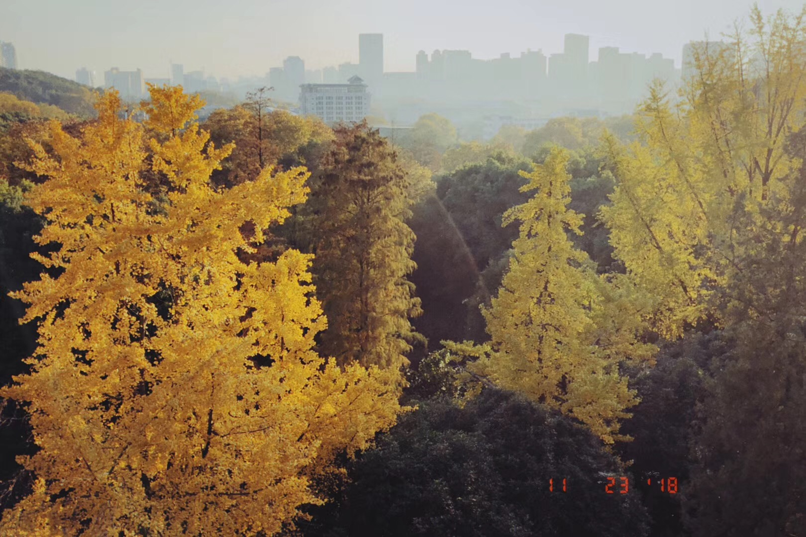
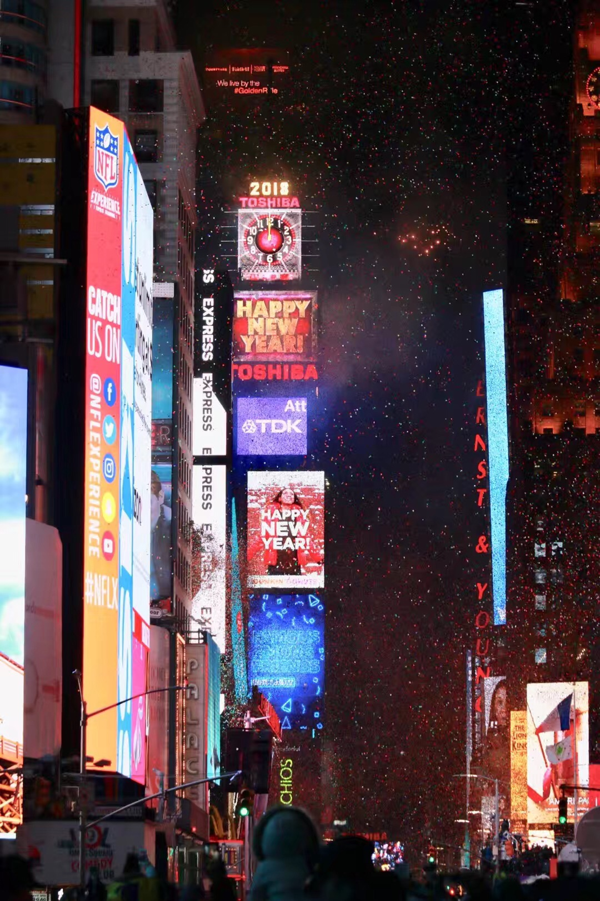
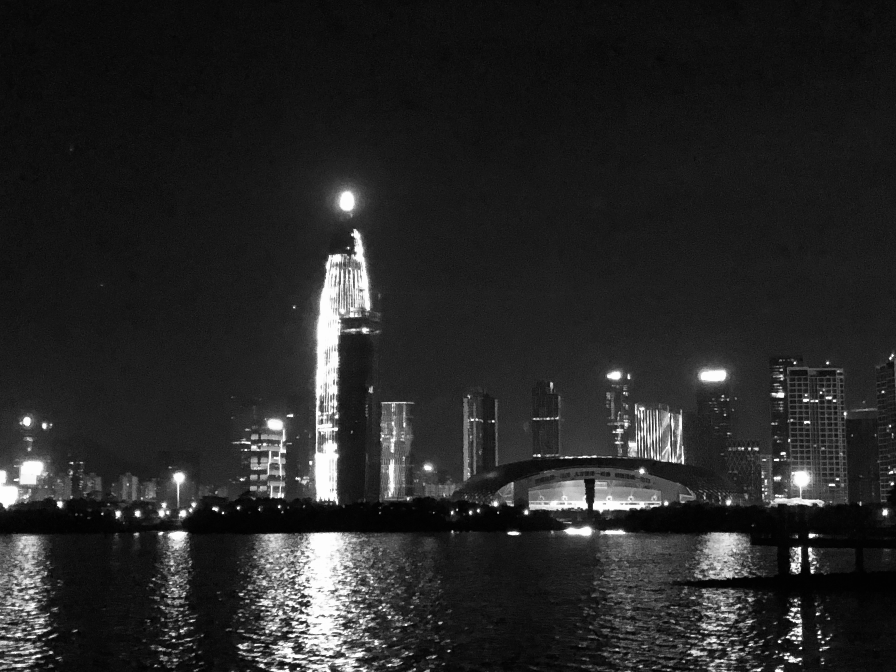

1
9月回校那天，恰逢研究生开学典礼，拖着行李箱走在一大群蓝色文化衫里，恍然有种自己也是新生的感觉。
输校园网学号的时候按错了最后一位，顺手删掉前看了眼，那应该是某位室友的，因为新生入学时是按学号分的床位。
路过校医院附近时想起，这里原来应该有家店，另一位室友推荐过，但我还没来得及吃就关门了。
然后想起，室友们早已毕业，四个人现在在三个大洲。
路过校门口豪客来的时候，想起刘哈哈二十岁生日时两个人在这吃过一顿，那时他不知为何没有请别人，两个县城青年照例感慨一番前途迷茫一无所有。这位初中时起就喜欢请人吃牛排的同学，现在在广州。
从街道口到东湖村，好些常去的小店都关门了。
湘菜馆和冷锅鱼这种常去的店已经不太敢去了，每次去都像是打卡。
虽然记得的店也就那几家。
和实习回来的学妹溜达到医村，在楼下的时她说，“我宿舍是这一栋”，我说“记得，这几年应该来过好几次了”。恋爱读研出国工作各奔前程，当年不认路的部委们早已都独当一面。
樱花大道的路旁有几颗很少人知道的枇杷树，夏天的时候会有居民过来打果子，大一时曾经捡过几个，在桂园食堂吃。现在还记得那一点夏天的酸甜。
和一位认识了挺久然而见得极少的朋友吃饭，聊得特别尽兴。唯一的问题是，两个人面面相觑，讨论了整整一晚，死活想不起来双方是如何认识。
在这个物和人都似是而非的珞珈山里，感觉自己宛如回到了过去。

看见我发的校园风景照，目录哥跑过来说
“你就不是去读书的。你是去回忆青春的。”
2
真的是远远超乎意料的一年，快到很多人来不及道别，就拖着行李匆匆奔赴下一站。快到不翻记录，都记不起半年前的心情。
非要寻个开端的话，还是费城那个冷到骨子里的冬天。
21岁，要去北京做专业实习，要找一份毕业后的工作，还要回珞珈山补一大波学分。
如果足够幸运，希望能找一份自己喜欢的工作。
即使依然被贫穷限制想象力， 也希望做白日梦的时候足够开心。
如果有真爱的话，希望她早点从娘胎出来。或者好好活着，等待AI女友的诞生。
希望能做好一定要做的事情，想做的事情能够少留遗憾。
即使迷茫和焦虑依然是常态，也希望还能读得进想读的书。或许可以读一点心理学，在睡不着的晚上，还能与自己握手言和。
——《年记 | 二十一》
3
在美国的生活有点像上世纪的电影，尽管满打满算还不到一年。
从房东那蹭了一张很舒服的沙发，和互相嫌弃的室友坐在上面感慨了很多人生
熟练掌握了老干妈配各种三明治面条饺子蛋炒饭，学会了煎牛排煮火锅做韩式甜辣酱炸鸡
虽然牛排总是烤得咬不烂，火锅料是平时吃不动的食材，炸鸡酱里的大蒜切得比葱还粗
但不会做饭的朋友们表示，都还挺好吃：）
之前特别想做游戏设计，找了从策划到开发的很多资料和教程。最后只学了几个demo、翻了几章书，大部分时间都在征战中世纪和星空。
后来，在累计面试失败4次后，终于放弃了这个宅男梦想：）
（当然，并没有想到最后又以另一种方式实现了它）
度过了很多与自己相处的时候
一个人在房间里写日记的时候
深夜荨麻疹痒到全身都是疙瘩的时候
通宵游戏后看着费城冬天晴冷空旷的日出去上课的时候
翻遍列表找不到人聊天的时候
窝在沙发上读各种小说文献杂志报纸的时候
交流的最后，是一场在东海岸几十年来最冷的冬天里的仓促旅行
一个人爬上波士顿的高塔，望着港口的蓝天和白云
在华盛顿的青旅里，拉着几个国家的年轻人玩了一场跨国狼人杀
平安夜里，在无人的街头看狂风吹得红绿灯摇摇欲坠
冻雨里和张逸涵走了好远，就看了一眼五角大楼
在零下十度走过布鲁克林大桥后，喝水喝了一肚子冰碴
闯入纽约街头的大雪，拍到了敞篷公交车上手持DV的老人
最后一站是时代广场，完全听不见也听不懂几个街区外的跨年夜表演，挤到分分钟相信纽约是种族大熔炉，目之所及全是人和广告牌，冻得脚没有了知觉，靠长焦镜头堪堪拍下了一张照片。
前几天发现，原来有人一直拿它当手机屏保。

某天在火车站赶作业的时候，朋友跑去看了菲茨杰拉德的墓，我要了一片树叶，夹在《The Great Gatsby》的尾页。书是16年在开罗买的，最后一句话是：
So we beat on,boats against the current,borne back ceaselessly into the past.
4
回家后本就有伤的脚冻得更痛，寒假一个多月的印象只剩下养伤、学车和读书，年后就去了北京。
5
在北京的生活倒是异常的充沛
在后厂村的十字路口感受了中国互联网的作息和拥堵
坐了传说中的百度无人车，见了果然很帅的李彦宏，感受了陆奇宣布离职时全科技园不可思议的空气
读了很多启蒙意义的PM入门书，得到了很多朋友和前辈的关心与帮助，攒了好些笔记和想法，了解了一个复杂庞大而又有点迷人的个性推荐系统
感受了千军万马的校园招聘，幸运地在清北如云的北京场拿到了dream offer
见了很多老朋友，打卡了无数个博物馆展览馆文化区和商圈
在北大学了几个月摩登舞，带上蝴蝶结在未名湖边参加了人生第一次舞会
体验了三里屯的夜生活，凌晨club门口川流不息的豪车和嘈杂的音乐
某个周末急匆匆地跑出门，拍到了想拍了好几年的下雪的北京
那些看着五环外宽阔的八车道、没有路边摊的街头、啥都难吃的小餐馆、五月还光秃秃的树的日子
那些没吃早餐坐车堵到吐、11点下班在新浪楼后工地翻共享单车、下雨下雪也骑车淋回家的日子
那些半夜咳得想叫救护车、进了公司才敢摘口罩、同学就在马路对面、几家食堂都蹭遍的日子
那些公交车上读书、深夜思考前途、一出门来回通勤就两三小时的日子
北京不欢迎一无所有的年轻人，但它仍然魔幻而庞杂，仍然越来越像一切的中心
6月离开时，在机场发了这样一条微博：
希望下次来北京时，兜里的钱能多一点。
走得太急了，还在地铁里落了一件衣服。
6
结束了北京的生活后一路南下，回武汉赴了几场毕业照和散伙饭，宿舍从二楼搬到了四楼，送走了大学里绝大部分的同学和朋友。
那种心情，有点像自己躲着没有毕业，自己延长了青春的时间。
毕业典礼那天，又从家里赶去了深圳，没有背相机。
前几天看到的日剧截图里，有这么两句话：
“人总是对喜欢的人不说我喜欢你，却说，我想你。”
“对想见的人不说我想你，却说，要不要一起吃个饭。”
嘿，我想你们了。
有空一起吃个饭。
7
对深圳的印象是永远汗流浃背的夏天，明晃晃的蓝天白云，说来就来的暴雨，还有密密麻麻的高楼大厦
村屋的楼道里每晚都爬着美洲大蠊
离海不远的城中村，一暴雨就能听屋顶的交响乐
永远灯火通明的滨海大厦
能看深圳湾日落的38层餐厅
周末无人的会议室
公共空间里巨大而空旷的落地窗
方案疯狂被毙的日夜
同时对接N个岗位的懵逼
来自导师的每日叩问
一封邮件改七八遍的绝望
独自负责项目的成就
见到产品上线和陌生人分享的开心
带我吃遍了周边餐厅的同事，总是在跟我玩的李政锦，在深圳团聚的三人组，还有靠几人之力social出的深圳相亲交友K歌群
8月底，在实习考核、项目上线和秋招开始的压力里大到快要崩溃，每天都在骚扰朋友和父母，雨夜里一个人撑伞走过深圳湾

然后，在某个晚上得知自己拿到了免试名额，准备了半个月的PPT无须再用，长达一年半的求职期就此结束，五年的大学生活也开始进入尾声。
当时只写了一句：
“多少艰苦不可告人”
8
有人说，可能性的丧失，意味着衰老和死亡
站在校园生活的末尾和职场生涯的开端，倒也真切感觉到很多年少时的幻想在远去
原来自己从身高到长相到能力到家庭都平庸，原来自己做不了科研学不懂算法看不懂学术，原来自己还没衰老就已经有了健康问题
年少时对自我和社会充满困惑，但回过头看，却也觉得几年来的蒙头乱撞不是没有意义
可能真的是好几年来最好的状态吧。经济和思想都快要独立，无意改变世界，却也不想过早向世界妥协
做完了专业实习，选择了自己的职业方向，找到了超出预期的工作，开始思考并推动自己的想法变成现实
走过了跨年夜的时代广场、下雪的故宫和雨夜的深圳湾，又回到了阔别已久的珞珈山
忙于DDL和拖延，终于在第五年快修完了学分，蹭了想读的经济学和哲学，完成了减肥十斤的目标，开启了穿搭改造的小计划，还跑去纹了个眉
遇见了一见倾心的姑娘，和她一起走过初冬的芦苇荡、宁静的十八栋和落日的东湖，享受了许多温柔的理解和美好的陪伴
学会了与自我及家庭握手言和，做完了一定要做的事，想做的事几乎没有留下遗憾
听过了很多溢美和鼓励，最好的是”值得信赖”、“想做就做”以及”热爱生活”
见过了很多很多种不同的生活，觉得自己在接近自己想要的那一种
9
5月，在求职面经里写了几句话，有人说读了好几遍：
“经验需要积累，技能需要学习。但快速学习的能力，拥抱变化的心态，坦诚沟通的热情，和坚持自我的勇气，却需要长久保持。”
22岁，想多读点书，想坚持写作，想做完自己的毕设小程序，想练出腹肌拍毕业照
想学驾照、游泳、滑板和调酒。想做南山区最不务正业的产品经理，住在嘈杂而充满烟火气的闹市，随身带着胶片记录庸常。
白天溜滑板上班，深夜加完班调鸡尾酒，周五骑发光的山地车在深圳湾刷圈，周六用VR眼镜和无人机俯瞰城市夜色，周日去海边一个人听听歌。
心情好就去看话剧，存够了钱就买机票去旅行，恋爱了就带她去听音乐会，失恋了就去蹦迪。
想去台湾、东北、东京、香港、伊斯坦布尔、里斯本、新马德里、伦敦、巴黎、柏林、波兰、奥斯陆、耶路撒冷、新加坡、夏威夷和里约热内卢。或者，只是回小城晒晒太阳。
22岁，还想探索自我和世界的可能。想做一点，能开心的说给身边人听的事。
22，还想做少年。
江海 于珞珈山